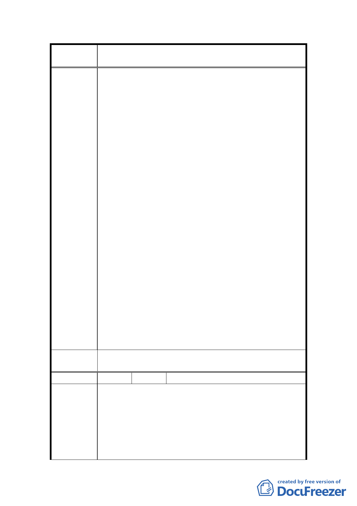

案
名
變更臺北市士林區三玉段一小段 22-3 地號等體育場用
地（天母運動公園）為臺北市立體育學用地主要計畫案
積縮小，更會帶來交通壅塞與空氣污染等問題。
7.希望市府能深入體察民意，趕緊修正決策，切莫鑄成
大錯。
8.希望本次說明會能作成紀錄供都委會委員參考。
9.體院充其量只能做為附屬單位，千萬不能反客成為主
體。
10.本案都市計畫未通過，現場即大興土木，建照核發有
無問題？若市府帶頭違建，則應先進行拆除工程。
11.天母棒球場至今居然不能開放給地區居民使用，政府
單位欺騙天母地區居民，政府若有誠意，應開放棒球
場使用。
12.請天母的居民配合於 12 月 3 日以前將民眾陳情函及
連署書一併送都市計畫委員會供委員參考。
13.希望議員協助立刻凍結體院興建校舍相關預算。
14.希望都委會能安排都市計畫委員在 12 月 4 日以後能
到天母地區來與大家作非正式溝通。
15.希望議員能於市議會另外召開公聽會。
16.建議目前興建的體育設施可以保留，以供社區使用，
但希望體院不要進駐。
17.建議將本次會議由士林分局及體育學院所側錄之錄
影帶送給秘書長、副市長、市長參考，讓市政府了解
當地民眾的心聲。
18.本案變更緣由始末，應請教育局詳細說明。
19.建議教育局和士林區公所能辦理民意調查。
20.希望未來都委會開會時，一定要通知自救會出席。
21.如果陳情和連署有效，建議暫不需作民意調查。
委員會決
議
同編號 1。
編 號 18 陳情人 千齡法律事務所
1.查「行政計畫有關一定地區土地之特定利用或重大公
共設施之設置（或變更），涉及多數不同利益之人及多
數不同行政機關權限者，確定其計畫之裁決，應經公
陳 情 理 由 開及聽證程序……。」行政程序法第 164 條第 1 項定
有明文：又「行政機關作成限制或剝奪人民自由或權
利之行政處分前，……，應給予該處分相對人陳述意
見之機會。」同法第 102 條「應給處分相對人陳述意
17